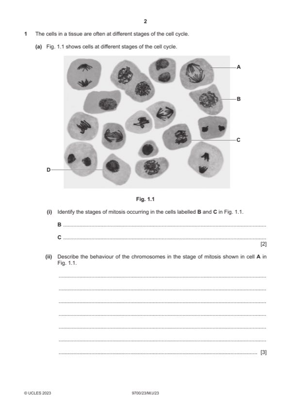

Question 1

Original paper page 2
Part 1(a)(i) — solution
B prophase ; I early / mid / late 2
C metaphase ; A early anaphase
Mark points
- Include the ideas shown in the solution above.
Part 1(a)(ii) — solution
any three from: 3
A identical chromatids for sister chromatids
assume points are related to anaphase, unless stated as telophase
sister / identical, chromatids (of each chromosome) separate / AW ;
A idea of spindle fibres pulling apart sister chromatids
in context of end of metaphase / start of anaphase
movement of / AW, daughter chromosomes / chromosomes / (sister) chromatids, to (opposite) poles (of cell) ;
R if context is a chromosome composed of two chromatids
R if context is movement of sister chromatids to same pole
I ends of cell
movement (to opposite poles) by spindle fibres, contracting / pulling ;
I moved by spindle fibres
centromeres, qualified ;
e.g. centromeres divide at start of anaphase (to separate sister chromatids)
centromeres leading (during movement so arms of chromosome lagging)
if telophase stated, mark behaviour of chromosomes in telophase to max 2:
(daughter) chromosomes at poles ;
A sister chromatids at poles
A ref. to two separate groups of (daughter) chromosomes
(chromosomes) become diffuse / become long and thin / decondense / uncoil ;
A become chromatin
ref. to re-forming nucleolus ;
2023 Page 8 of 20
9700/23 Cambridge International AS & A Level – Mark Scheme May/June 2023
Mark points
- Include the ideas shown in the solution above.
Part 1(a)(iii) — solution
any three from: 3
(active during) DNA replication / S phase / synthesis phase ;
A during synthesis of DNA / semi-conservative replication
joins / AW, Okazaki fragments ; A description of Okazaki fragments
on lagging strand ;
(by catalysing) formation of phosphodiester bonds (between adjacent nucleotides) ;
to complete sugar phosphate backbone / AW ;
e.g. produces continuous, DNA / polynucleotide, strand
Mark points
- Include the ideas shown in the solution above.
Part 1(b)(i) — solution
at both ends (of interphase chromosomes) ; 1
A on the ends (of, a chromosome
Mark points
- Include the ideas shown in the solution above.
Part 1(b)(ii) — solution
any three from: 2
telomeres, maintained / AW, for, longer / greater length of time ;
allows increased, number of cell cycles / DNA replication cycles / AW ;
A allows, mitosis / cell division, to occur more times AW
R speeds up, mitosis / cell division / cell cycle
idea of prevents loss of genes (at ends of chromosomes, for a longer time) ;
A loss of, genetic information / coding DNA
A less, genes / AW, lost
I loss of genetic material
ref. greater ability to replace, damaged / worn out / old, cells ;
in context of active for a longer time
idea of cell metabolism remains optimal / cell does not go through apoptosis / AW ;
2023 Page 9 of 20
9700/23 Cambridge International AS & A Level – Mark Scheme May/June 2023
Mark points
- Include the ideas shown in the solution above.
Part 1 — solution
overall decrease in number of reported cases from 1980 to 2000 / over the time period / AW ;
Mark points
- Include the ideas shown in the solution above.
Part 1 — solution
prescribe / take, antibiotics, only when (absolutely) necessary ;
A examples e.g. do not use for viral infections
do not use as preventative medicine
Mark points
- Include the ideas shown in the solution above.
Part 1 — solution
(carbonic anhydrase) catalyses the reaction between CO2 and H2O ; AW
Mark points
- Include the ideas shown in the solution above.
Part 1 — solution
ref. presence of, non-self / foreign, antigen
or
gliadin acts as antigen
or
ref. to antigen presentation (by macrophages) ;
Mark points
- Include the ideas shown in the solution above.
Part 1 — solution
less / no, ATP produced from aerobic respiration ;
A ETC / oxidative phosphorylation
Mark points
- Include the ideas shown in the solution above.